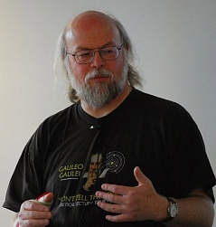

Apa Sih Bahasa Pemrograman Java Itu?
Penulis : Adrianus Marsi Lanur
5 Juli, 2022
 Java adalah bahasa pemrograman yang dapat dijalankan di berbagai komputer termasuk telepon genggam. Bahasa ini awalnya dibuat oleh James Gosling saat masih bergabung di Sun Microsystems
saat ini merupakan bagian dari Oracle dan dirilis tahun 1995.
Java adalah bahasa pemrograman yang dapat dijalankan di berbagai komputer termasuk telepon genggam. Bahasa ini awalnya dibuat oleh James Gosling saat masih bergabung di Sun Microsystems
saat ini merupakan bagian dari Oracle dan dirilis tahun 1995.
Bahasa ini banyak mengadopsi sintaksis yang terdapat pada C dan C++ namun dengan sintaksis model objek yang lebih sederhana serta dukungan rutin-rutin aras bawah yang minimal. Aplikasi- aplikasi berbasis java umumnya dikompilasi ke dalam p-code (bytecode) dan dapat dijalankan pada berbagai Mesin Virtual Java (JVM).
Java merupakan bahasa pemrograman yang bersifat umum/non-spesifik (general purpose), dan secara khusus didisain untuk memanfaatkan dependensi implementasi seminimal mungkin. Karena fungsionalitasnya yang memungkinkan aplikasi java mampu berjalan di beberapa platform sistem operasi yang berbeda, java dikenal pula dengan slogannya, "Tulis sekali, jalankan di mana pun".
Java merupakan bahasa pemrograman yang bersifat umum/non-spesifik (general purpose), dan secara khusus didisain untuk memanfaatkan dependensi implementasi seminimal mungkin. Karena fungsionalitasnya yang memungkinkan aplikasi java mampu berjalan di beberapa platform sistem operasi yang berbeda, java dikenal pula dengan slogannya, "Tulis sekali, jalankan di mana pun".
 Bahasa Java pertama kali di kenalkan di sebuah projek yang bernama “The Green Project” yang bertempat di Sun Microsystem pada sebuah Perusahaan perangkat lunak yang berlokasi di Amerika.
Projek tersebut di ketuai oleh James Gosling, Mike Sheridan, Patrick Naughton dan juga Bill Joy. Pada awal mulanya, projek tersebut memiliki tujuan untuk membuat sebuah alat yang pintar.
Tetapi, di karenakan tidak puas dengan hasil dari bahasa program C++ & C, Akhirnya mereka membuat keputusan untuk membuat bahasa koding yang lebih baik daripada bahasa pemrograman C++ & C.
Pada akhirnya setelah melewati 18 bulan projek berjalan, James Gosling telah berhasil menciptakan bahasa program baru yang di namai dengan Oak.
Namun, pada waktu itu nama Oak telah dipakai oleh Perusahaan Oak Technology. Hingga pada akhirnya pada tahun 1995, Oak telah di ganti menjadi Java.
Nama Java sendiri di kabarkan terinspirasi dari kopi Jawa. Oleh karena itu, logo pada bahasa program Java yaitu secangkir kopi.